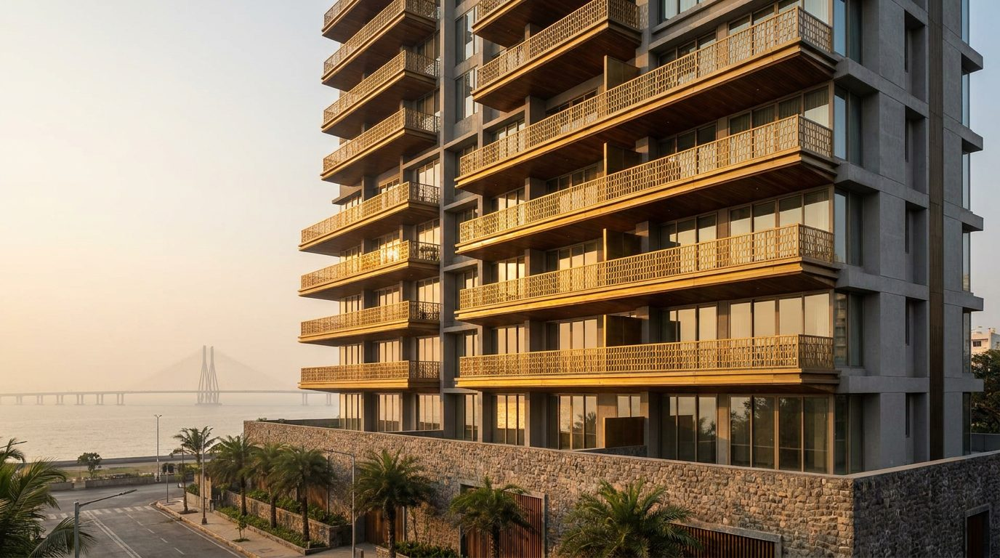
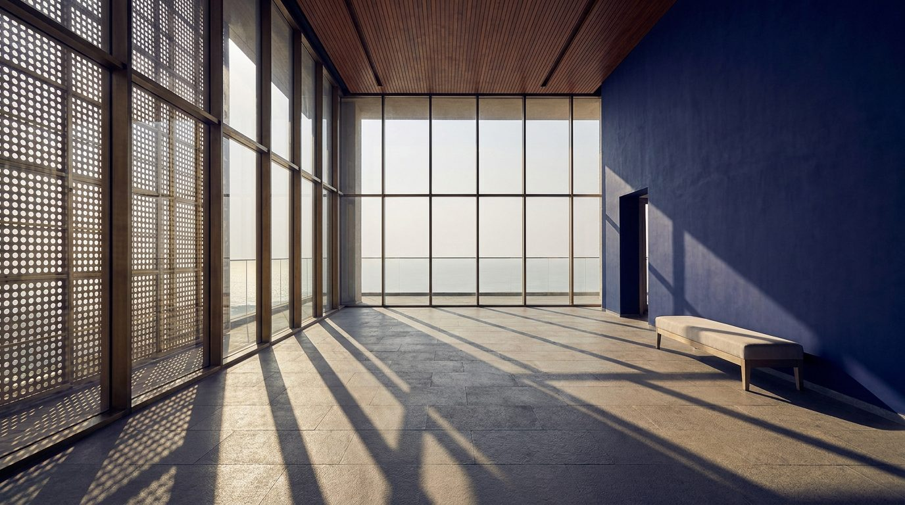

Atlante · INT-IN-01 · India · Asia
Attico a Worli con doppia altezza, jaali di ottone e vista sul mare
Esempi · esterno e interno


Perché funziona
A Mumbai il cliente compra quota: altezza, vista mare e indirizzo. Worli è la penisola dove convivono il villaggio Koli e le torri nuove, ed è l'unico punto in India dove un attico può essere insieme loud e credibile. Per Poetica serve un set che regga il prodotto italiano in doppia altezza senza scivolare nel palazzo del Golfo: materiali indiani — pietra Kota, teak, ottone traforato — e un solo blocco di colore. Il made in Italy entra nella falegnameria e nella pelle. Non deve diventare un hotel a cinque stelle con lampadari di cristallo e oro: qui il lusso è la sezione della terrazza, non l'ornamento.
Architettura · elementi riproducibili
- doppia altezza 6400 mm sul soggiorno, controsoffitto a 3200 mm sul resto della casa
- vetrata a tutta altezza 4200 mm, montanti in ottone brunito a passo 1200 mm
- jaali in ottone traforato spessore 8 mm, modulo 600x600 mm, come filtro sulla parete ovest
- pavimento in pietra Kota 600x300 mm, finitura ondata, giunto 3 mm
- soffitto in doghe di teak 40x90 mm a interasse 60 mm sulla sala da pranzo
- terrazza profonda 6000 mm, bordo in pietra e parapetto in vetro 12 mm
- porta a tutta altezza 2700 mm in teak, maniglia in ottone, a filo muro
Fatto verificato: Worli è una delle quattro penisole di Mumbai, con Colaba, Bandra e Malabar Hill, e nasce come una delle Sette Isole di Bombay cedute dai portoghesi all'Inghilterra nel 1661; il nucleo storico è il villaggio di pescatori Koli e il Worli Fort del XVII secolo.
Fatto verificato: il Bandra–Worli Sea Link è un ponte strallato di 5,6 km e 8 corsie, alto 126 m, con campate principali di 250 m; le prime quattro corsie sono state aperte il 30 giugno 2009 e tutte e otto il 24 marzo 2010.
Fatto verificato: i Kanchanjunga Apartments di Charles Correa (progetto 1970, completati 1983) sono una torre di 32 piani in cemento a vista, con appartamenti duplex, doppia altezza e terrazze-giardino sfalsate che schermano il sole da ovest.
Valutazione: Correa è il precedente giusto perché porta la veranda del bungalow di Bombay in quota; l'attico contemporaneo ne tiene la logica — terrazza profonda e schermo — ma cambia materia, dall'intonaco e cemento al vetro e all'ottone.
Luce
Prompt di generazione (EN)
Empty duplex living room 6.4 m high on the twenty-eighth floor facing the Arabian Sea, full-height glazing 4200 mm with burnished brass mullions at 1200 mm centres, a perforated brass jaali screen of 600 x 600 mm modules on the west wall, Kota stone floor in 600 x 300 mm slabs, teak slat ceiling over the dining zone, a deep indigo lime-plaster wall, one low bench in pale linen. One key light: low western sun at 22 degrees, 5000 K, raking under the double height and printing the jaali grid across the stone, sea haze as a pale grey field, no other source. 24 mm lens, camera at 1.2 m, two-point perspective, verticals parallel, saturated indigo-and-brass grade with clean shadows, no people, no text, no logos.